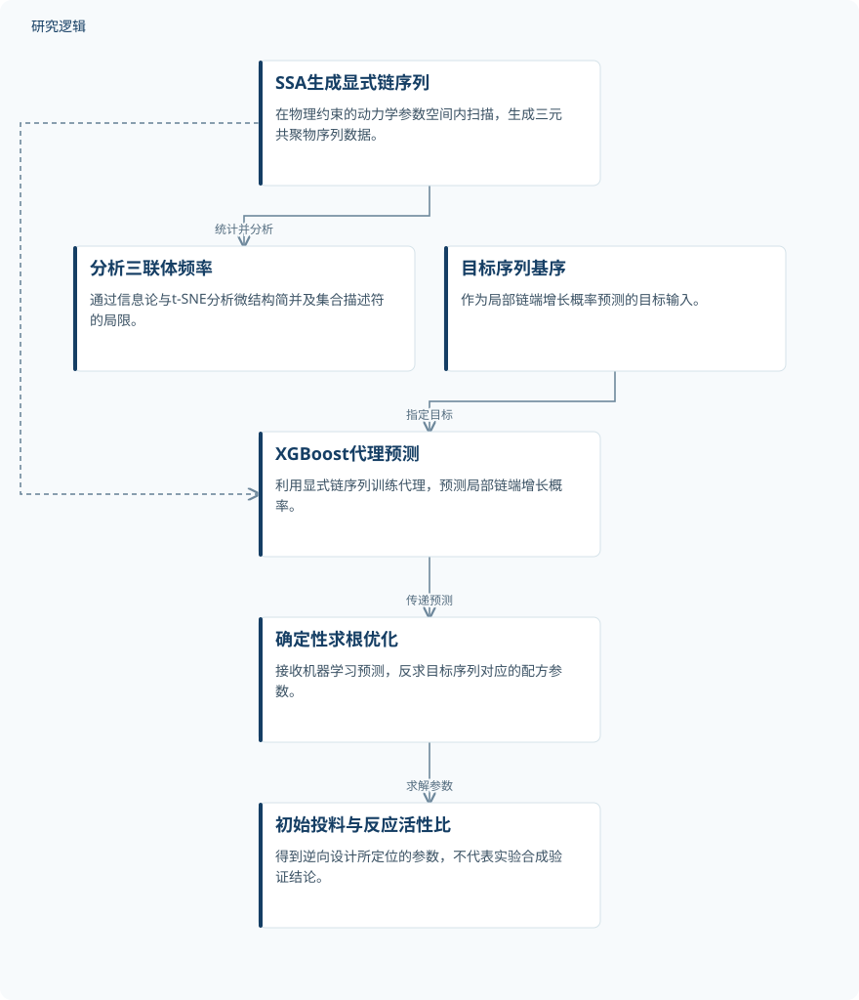

摘要解读
机器学习加速序列可控三元共聚物的逆向设计
Machine Learning-Accelerated Inverse Design of Sequence-Controlled Terpolymers
解读更新 2026-11-10 11:43 · 依据公开摘要整理，未核验全文细节
怎样从目标聚合物序列反推出合成配方，而不只预测整体反应进程？这项研究将显式链序列模拟、机器学习代理与确定性求根连接起来，探索序列可控三元共聚物的逆向设计。
文章目录
宏观反应预测为何不足以描述链序列
序列可控聚合物为材料设计提供了潜力，但多组分共聚的动力学参数空间维度很高，寻找实验配方因此成为瓶颈。摘要指出，传统常微分方程（ODE）求解器能够快速预测宏观动力学，却无法显式描述聚合物主链的微观序列结构。
这里需要解决的不只是“反应如何推进”，而是“单体如何沿链排列”。研究将关注点从宏观反应描述转向具体序列，希望建立目标序列特征与初始单体投料、反应活性比之间的联系。
用显式序列数据连接代理预测与配方求解
作者采用随机模拟算法（SSA），在具有物理约束的9维动力学空间内扫描参数，高通量生成三元共聚物序列数据，考察投料化学计量与动力学倾向如何影响大分子结构。每次模拟得到的27分量三联体频率矩阵，随后接受信息论分析和t-SNE降维分析。
在逆向设计环节，研究利用SSA显式链序列训练机器学习代理，以XGBoost回归器根据目标序列基序预测局部链端增长概率，再将机器学习预测传入确定性求根优化器，求解相应的初始单体投料与反应活性比。
依据摘要整理的序列逆向设计示意


概括序列数据生成、微结构分析与配方反求的关系；这是摘要示意图，并非论文原图，不表示实验合成已获验证。
下载 SVG图示关系说明
实线表示相邻阶段的信息流，虚线表示跨阶段联系或反馈。
SSA生成显式链序列 → 分析三联体频率：统计并分析；SSA生成显式链序列 → XGBoost代理预测：提供训练数据；目标序列基序 → XGBoost代理预测：指定目标；XGBoost代理预测 → 确定性求根优化：传递预测；确定性求根优化 → 初始投料与反应活性比：求解参数
微结构简并暴露传统集合描述符的局限
摘要报告，信息论与降维分析揭示了显著的微结构简并：传统集合描述符不足以区分具体序列结构。作者特别指出，Harwood游程数无法描述序列细节。这意味着，宏观描述相近，并不等于链序列相同。
作者还报告了闭环逆向设计策略的演示，通过机器学习预测与确定性求根定位目标结构所需的投料和反应活性比。其成果重点是建立从序列目标到动力学参数的计算连接；加速发现与可靠合成则是摘要提出的用途，不能据此视为已完成实验验证。
预测精度与合成验证范围仍需查阅正文
仅凭摘要，无法判断模拟数据规模、参数取值范围、训练测试划分、独立验证范围及预测误差，也无法核实相对其他方法的定量加速幅度。摘要未交代实验合成验证的样本与条件，因此不能判断求得配方在真实体系中的适用范围；这些信息未在摘要报告，不等于论文没有开展相关工作。
阅读启发：先问目标结构能否被充分描述
阅读启发：对逆向设计而言，值得先检查目标描述是否足以区分关心的结构，再讨论优化器能否找到参数。进一步阅读可关注三联体频率如何表征序列、微结构简并如何影响逆向解的解释，以及代理预测与求根结果如何核验。本文的数字孪生用于聚合物设计，不能直接等同于已验证的智能运维应用。
以上为本站阅读启发与建议，不是论文已验证的结论。